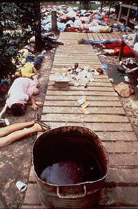
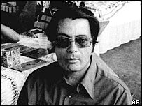

A notorious incident of mass suicide and mass murder involving the use of poison occurred in 1978 in the communal settlement of Jonestown, Guyana, located between Venezuela and Brazil, South America. Founded in the mid-1970s by charismatic cult leader Jim Jones, the commune existed for only a few years. Then, 913 people in the commune died in an act of mass suicide and mass murder on the evening of November 18, 1978.
James Warren "Jim" Jones was an ordained minister who moved his congregation from Illinois to California in 1965, settling near San Francisco in 1971 where Jones began the People’s Temple, a religious cult. In 1974 and for various reasons, Jones decided to build his version of a perfect religious society in Guyana where he would be free from intervention by people who were concerned about family members who had joined his cult.

In 1974, Jones leased about 12 square kilometres of jungle in Guyana and personally oversaw the construction of a small commune that by 1978 became home to more than 1000 followers. Far from the original promise of socialistic paradise, Jonestown became known as a despicable form of indulgence for Jones. He reportedly tortured followers for minor infractions and regulated food supplies as a further means of control.
Various forms of indoctrination were practised including what became known as white nights—tests of loyalty and faith in Jones’ leadership that involved drinking Kool-Aid® that followers were tricked into believing contained poison. Everyone who drank the mixture survived and was honoured. Those who refused were shamed into future acts of compliance as signs of their faith in Jones. In effect, Jim Jones was conducting rehearsals for a mass suicide that he referred to as “revolutionary suicide”.
Acting upon allegations of human rights abuses and the possibility that people were being held in Jonestown against their wills, Leo Ryan, a US Congressman, flew to Guyana on November 14, 1978. A contingent of media representatives as well as family members of some of the residents of Jonestown accompanied him to the commune the night of November 17. By the morning of November 18, several people had asked to leave with Ryan and return to the United States. This greatly upset Jones who nevertheless allowed Ryan, his entourage, and several defectors to go to the airport.
Shortly before take-off, a violent ambush occurred. Nine armed men fired numerous rounds, killing Congressman Ryan, three journalists, and a person who was trying to defect. Twelve people accompanying Ryan, media representatives, and defectors were wounded, several of them seriously. All the injured were left at the airport where they lay until morning when they were rescued by the Guyanese government.
After the airport ambush, the gunmen returned to Jonestown where, on the evening of November 18, Jim Jones organized another white night. This time, however, the grape-flavoured Kool-Aid® was actually spiked with poison. Forensic toxicologists determined that the poison was potassium cyanide and that the painkilling drug Valium® was added to the Kool-Aid®. Convinced that American-sponsored Guyanese soldiers would soon slaughter them anyway, all the followers loyal to Jones ensured that the entire commune lined up to participate in this mass suicide. Children were forced to go first; grieving parents soon joined them.
Potassium cyanide (KCN) is a colourless crystalline compound similar in appearance to sugar and highly soluble in water. KCN smells like bitter almonds and is highly toxic. KCN inhibits the production of ATP in the cells by blocking cellular respiration in the mitochondria. Cyanide poisoning causes a red facial complexion in the victim because the tissues are unable to use the oxygen in the blood.
More that 200 mg of potassium cyanide ingested results in loss of consciousness in ten seconds to several minutes depending on the body’s immune system and the amount of food in the stomach. After about 45 minutes, the body convulses and then goes into a coma. If not treated, the person then has a heart attack and dies within two hours.
That night in Jonestown, 913 people, including 276 children, died of cyanide poisoning. Loyal followers of Jim Jones murdered perhaps more than 100 who tried to resist. Jones was found dead of a gunshot wound to the head—thought to have been self-inflicted. Only a few autopsies were conducted. Jonestown was abandoned by the few remaining members; it was destroyed by fire in 1983. Today, Jonestown is one of the most notorious mass suicides and mass murders in history.